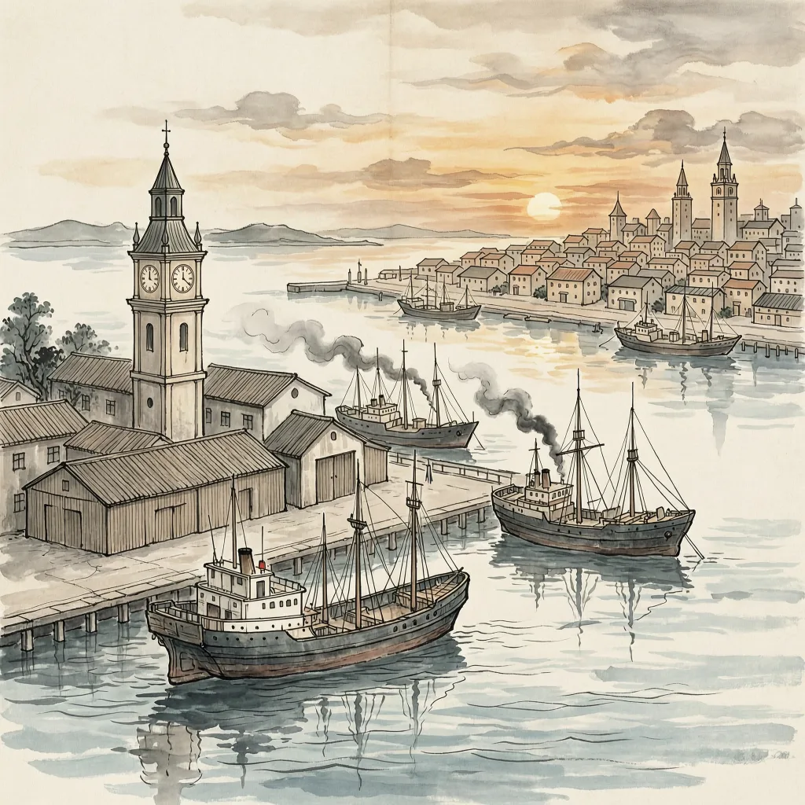

十余万华工换不来山东，代表没有出现在签字典礼上
1919年6月28日，凡尔赛宫镜厅，战胜国代表依次在《凡尔赛条约》上落笔。收到请柬的中国代表没有到场。几天前，北京电令代表团拒签——这个派出十余万劳工为协约国后勤出力的战胜国，用一次缺席完成了表决。
1917年8月，北洋政府借对德宣战挤进战胜国行列。此后两年，十余万华工赴欧，在英法军队后方卸货、挖壕、清理战场，数千人葬身法国北部。1919年1月，以陆征祥为团长、顾维钧为主力的中国代表团抵达巴黎，提出两项要求：废除“二十一条”，直接收回德国在山东的权益。参加和会的各国代表有1000多人，中国是其中之一。
和会由法国总理克里孟梭、英国首相劳合·乔治、美国总统威尔逊主导，战胜国的资历换不到一票。日本的底气不是辩论，而是一叠纸：1915年“二十一条”逼出的条约、1917年英法等国以承认日本继承山东权益为条件的秘密换文，外加日军自1914年起实际占领青岛。威尔逊想用即将成立的国际联盟压住这套密约外交，但英法拒绝毁约。4月底，三巨头裁定山东权益转交日本。消息传回北京，5月4日学生上街。
签字典礼前几天，北京电令代表团不予签字。6月28日，中国席位空着。这是近代中国第一次在多边场合对既成事实说不，代价随即到账：拒签换不回山东，问题反而悬置，中国直到1921年才单独与德国订约结束战争状态。转机在太平洋对岸，美日矛盾使山东案在华盛顿会议重审，1922年初日本签约允诺撤兵。同年12月，中国官员与驻军进入青岛接手市政，距那场拒签三年半。
